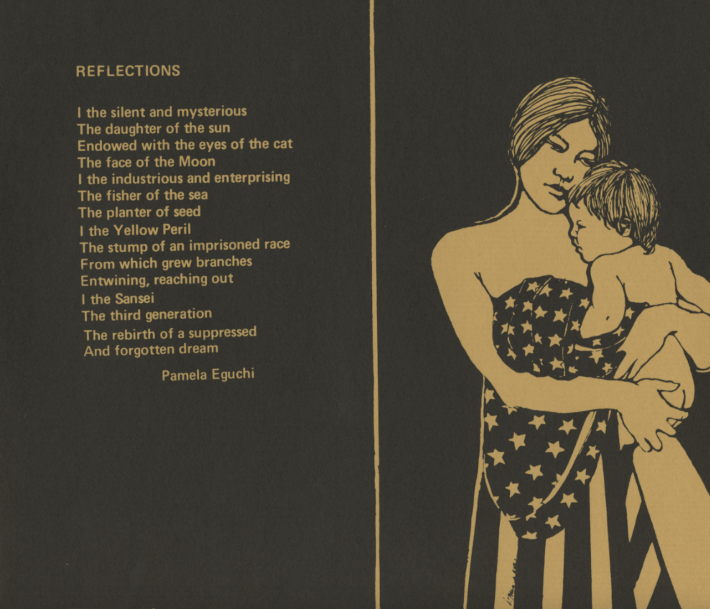

art and social
movements
research project
movements
research project
arts and culture in the
Asian American
Movement
Movement

Historical Background
In 1965, the strict quotas on Asian immigration to the United States were lifted, promoting an influx of Asian immigrants, particularly Chinese. This accelerated the growth of Manhattan’s Chinatown and brought more attention to the many inequalities present for Asian Americans. During this period, the Asian American civil rights movement was growing after many Asian Americans were inspired by participating in the African American civil rights movement. One notable example was Yuri Kochiyama, a Japanese American who worked closely with Malcolm X before becoming involved in the Asian American Movement.
Asian Americans protested for fair hiring against many organizations that discriminated against Asian Americans. This resulted in the organization Asian Americans for Equal Employment in 1974, later renamed Asian Americans for Equality (AAFE). The organization provided a space for minorities and resources for immigration and fighting discrimination. Many other organizations were formed around the same time, including the Basement Workshop in New York and Great Leap in Los Angeles, places for Asian artists to share their work. Great Leap was founded by Joanne Nobuko Miyamoto, one of the artists of the band Yellow Pearl, which wrote many songs about the struggles of Asian Americans to support the movement. Through these organizations, the movement created more spaces for Asian Americans to share their cultures and bring more attention to issues facing the community.
Yellow Pearl
Chris Kando Iijima, Joanne Nobuko Miyamoto, "Charlie" Chin
Song, 1973
The song title “Yellow Pearl” was created as a play on the perception of Asian Americans as a “yellow peril.” This was a way to reclaim the narrative around Asian Americans and emphasize the size and importance of the Asian population. “Yellow Pearl” was also the band’s name, and the song was the first track on “A Grain of Sand: Music for the Struggle by Asians in America,” their 1973 album.
The songs covered the experiences of Asian immigrants and their descendants fighting against racism in America. This song and the remainder of the album serve as a way to inspire Asian Americans by bringing attention to the community and discrimination.

Reflections
Pamela Eguchi
Poem, 1972
Artists also used art and poetry as a way to explore race and identity in the Asian American community. This piece was published in an art compilation called Yellow Pearl from the Basement Workshop. It explores the identity of Asian Americans as descendants of immigrants meant to live out the “American Dream.” The symbolism of branches growing shows the rebirth of that dream after years of discrimination suppressing the Asian American community.
The compilation and the compositions within were inspired by the song “Yellow Pearl” and connect to the name by using the words “Yellow Peril.” Similar to the song, this poem and the larger compilation of art pieces were a way to explore Asian culture and identity, particularly as it relates to immigration.
Photo content warning: Police brutality, violence

Photo of Peter Yew
Corky Lee
Photograph, 1975
Corky Lee was a Chinese-American self-taught photographer from New York City, who became known for documenting the Asian American movement and experience through his work. This photo of Peter Yew, a Chinese-American man, was taken after he had been beaten by the NYPD for attempting to stop the police from assaulting a 15-year-old over a traffic violation.
The photograph was printed on the front page of the New York Post, and acted as a conversation starter for Americans to see and discuss police brutality within the movement—the day the photo was published, a crowd of 20,000 marched from Chinatown to protest police violence. Lee’s work, and the medium of photography in general, were key factors in documenting unjust acts committed against Asian Americans and spreading the movement’s reach.